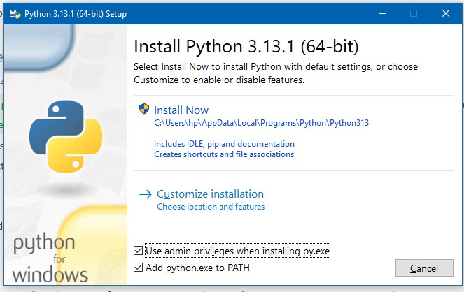

Introduction
What is Python?
Python is a high-level, interpreted, and general-purpose programming language known for its simplicity and versatility. Designed to emphasize code readability, Python uses indentation to define blocks of code instead of traditional braces, making it more beginner-friendly.
Tagline: "Python: The programming language for everyone, from beginners to experts." Key Features:-
Interpreted: Python executes code line by line, making debugging easier.
-
Dynamically Typed: No need to declare variable types explicitly.
-
Open Source: Free to use and maintained by a large global community.
History of Python
-
Creation: Python was created by Guido van Rossum and first released in 1991.
-
Name Origin: Named after the British comedy series "Monty Python's Flying Circus," reflecting the language’s emphasis on fun and creativity.
-
Development Goals:
- To make programming accessible to everyone.
- To create a language that is both powerful and intuitive.
Why Python is Popular
Python is often referred to as the "Swiss Army Knife" of programming languages due to its versatility. Here's why developers love Python:
-
Ease of Learning and Use
- Minimal syntax and natural language-like structure.
- Ideal for beginners who want to focus on logic without worrying about complex syntax.
-
Wide Applicability
Python is used in a variety of domains:
-
Web Development: Frameworks like Django and Flask.
-
Data Science & Machine Learning: Libraries like Pandas, NumPy, Scikit-learn.
-
Scripting & Automation: Automating mundane tasks using tools like PyAutoGUI.
-
Game Development: Frameworks like Pygame.
-
Scientific Computing: Libraries like SciPy.
-
-
Large Ecosystem
- Thousands of libraries and frameworks available for almost any task.
- Seamless integration with other languages and technologies.
-
Active Community
- One of the most supportive and active programming communities worldwide.
- Extensive documentation, tutorials, and forums to help learners at every level.
Features of Python
The core features that make Python unique
-
Simple Syntax:
print("Hello, World!") -
Cross-Platform: Works on Windows, macOS, Linux, and more.
-
Extensive Libraries: From machine learning (TensorFlow) to web development (Django).
-
Scalability: Suitable for both small scripts and large-scale applications.
-
Interpreted: No need for compilation, enabling quick testing and debugging.
-
Object-Oriented: Supports OOP principles like inheritance and encapsulation.
-
Community-Driven Development: Frequent updates and enhancements.
Python in the Real World
Python is used by top companies and organizations worldwide:
- Google (for backend development).
- Netflix (for recommendation systems).
- Instagram (for scalability).
- & many more...
Innovative Applications:
Artificial Intelligence (AI): Building intelligent systems.
Blockchain Development: Prototyping decentralized apps.
Web Scraping: Gathering data from websites.
Quick Facts About Python
| Feature | Details |
|---|---|
| Developer | Guido van Rossum |
| First Released | February 20, 1991 |
| Current Version | Python 3.13 |
| Paradigms | Object-Oriented, Procedural, Functional |
| Website | https://www.python.org |
Installation
-
Check if Python is Already Installed
Before installing, check if Python is already installed on your system.
- Open your terminal or command prompt.
- Type the following command and press Enter:
python --versionorpython3 --version - If Python is installed, it will display the version number (e.g., Python 3.10.6).
-
Download Python
Visit the official Python website: https://www.python.org.
- Click on the Downloads section.
- The website will automatically recommend the latest version for your operating system (Windows, macOS, Linux).
-
Install Python on Your System
For Windows
- Download the Python installer (.exe file) from the Python website.
- Run the installer.
- On the installation screen, check the box that says:
Add Python to PATH - Select Install Now for a quick setup or choose Customize Installation for advanced options.
- After installation, verify Python by typing python --version in the command prompt.
For macOS
- Download the macOS installer (.pkg file) from the Python website.
- Run the installer and follow the on-screen instructions.
- After installation, open the terminal and type:
python3 --version - If not already installed, consider using Homebrew:
- Install Homebrew (if not already installed):
/bin/bash -c "$(curl -fsSL https://raw.githubusercontent.com/Homebrew/install/HEAD/install.sh)" - Install Python using Homebrew:
brew install python
- Install Homebrew (if not already installed):
For Linux
- Open the terminal.
- Update the package list:
sudo apt update - Install Python:
sudo apt install python3 - Verify the installation:
python3 --version
-
Install pip (Python Package Manager)
pip is included with modern versions of Python. Verify its installation:
pip --versionIf not installed, use the following commands:
Windows/Mac
python -m ensurepip --upgrade- Linux
sudo apt install python3-pip
-
Set Up a Virtual Environment (Optional)
Creating a virtual environment isolates project dependencies.
- Create a virtual environment:
python -m venv myenv - Activate the virtual environment:
- Windows:
myenv\Scripts\activate - macOS/linux:
source myenv/bin/activate
- Windows:
- To deactivate the virtual environment:
deactivate
- Create a virtual environment:
-
Install an IDE or Code Editor
Choose a code editor for writing Python programs.
VS Code: Lightweight and extensible.
Download VS CodePyCharm: Full-featured IDE for Python
Download PyCharmJupyter Notebook: Ideal for data analysis and visualization.
Install using pip
pip install notebook
Recommended Options:
-
Test Your Installation
- Open a terminal or command prompt.
- Run the Python interpreter:
python - Type a simple command to test:
print("Python is successfully installed!")
Common Installation Issues
Python Not Recognized
- Ensure you added Python to your system's PATH during installation.
- On Windows, manually add the Python directory to PATH:
- Go to Control Panel > System > Advanced System Settings > Environment Variables.
- Edit the PATH variable to include the path to the Python executable.
Missing pip
Reinstall pip using:
python -m ensurepip --upgrade
Python Basics
Python is a versatile, high-level programming language known for its simplicity and readability. It is widely used for web development, data analysis, artificial intelligence, scientific computing, and more. This section introduces the core concepts of Python, including its syntax, data types, control flow, and functions, laying a strong foundation for building complex applications.
Explore interactive examples and exercises to get hands-on experience with Python's essential features.
-
Python Syntax
Python is known for its simple and readable syntax. Indentation is used to define blocks of code instead of braces { }.
Example: Hello World
print("Hello, World!")Explanation: The print() function outputs text to the console.
Note: Python uses indentation to define code blocks.
-
Variables and Data Types
Python is dynamically typed, so you don’t need to declare a variable type explicitly.
Declaring Variables
x = 5 # Integer y = 3.14 # Float name = "Alice" # String is_active = True # BooleanMultiple Assignments
a, b, c = 1, 2, 3Data Type Checking
print(type(x)) # Output: class 'int'
List of Common Data Types
Data Type Description Example Integer Whole numbers x = 5 Float Decimal numbers y = 3.14 String Sequence of characters text = "Hello" Boolean True or False flag = True -
Basic Input and Output
Interactive programs use input/output functions.
Getting User Input
name = input("Enter your name: ")Formatted Strings
print(f"Hello, {name}! Welcome to Python!") -
Basic Data Types
-
Numbers
Integer (int), Floating-point (float), Complex (complex).
number = 895 #integer print(number) #output: 895 -
Strings
greeting = "Hello, Python!" print(greeting.upper()) # Output: HELLO, PYTHON -
Lists
A list is an ordered, mutable collection.
fruits = ["apple", "banana", "cherry"] fruits.append("orange") # Add an item print(fruits[0]) # Access by index -
Tuples
A tuple is an ordered, immutable collection.
my_tuple = (10, 20, 30) print(my_tuple[0]) # Output: 1 -
Dictionaries
Dictionaries store data as key-value pairs.
person = {"name": "Alice", "age": 25} person["city"] = "New York" # Add a new key-value pair print(person["name"]) # Output: Alice
-
-
Operators
Arithmetic Operators
a, b = 10, 3 print(a + b) # Addition print(a - b) # Subtraction print(a * b) # Multiplication print(a / b) # Division print(a % b) # Modulus # &many more...Comparison Operators
x, y = 5, 10 print(x > y) # Greater than print(x == y) # Equal to # &many more... -
Control Flow
Conditional Statements
x = 10 if x > 5: print("x is greater than 5") elif x == 5: print("x is equal to 5") else: print("x is less than 5")Loops
-
For Loops
for i in range(5): print(i) -
While Loops
count = 0 while count < 5: print(count) count += 1
-
-
Python Comments
Comments make your code easier to understand.
# This is a single-line comment """ This is a multi-line comment or docstring. """
Intermediate Python Topics
Intermediate Python topics build upon the fundamentals to help you write more efficient, modular, and professional-grade code. This section dives into advanced concepts like functions, object-oriented programming (OOP), and the use of Python’s vast library ecosystem. By mastering these topics, you’ll be able to handle complex programming tasks, design reusable components, and leverage Python’s capabilities for a wide range of applications, from data analysis to software development
-
Functions
Functions are the building blocks of reusable code. They allow developers to encapsulate logic and make their code modular.
-
User-Defined Functions
Functions can accept inputs (parameters), perform operations, and return outputs.
Example: Function to calculate the factorial of a number:
def factorial(n): result = 1 for i in range(1, n + 1): result *= i return result print(factorial(5)) # Output: 12 -
Function Arguments
Python functions offer various ways to pass arguments, making them flexible.
-
Default Arguments: Useful for providing default behavior.
def greet(name="Guest"): return f"Welcome, {name}!" print(greet()) # Welcome, Guest! print(greet("Alice")) # Welcome, Alice! -
Keyword Arguments: Makes function calls more readable.
def introduce(name, age, city): return f"{name} is {age} years old and lives in {city}." print(introduce(age=30, city="New York", name="John")) -
Arbitrary Arguments: Handle unknown or varying numbers of arguments using *args (positional) and **kwargs (keyword).
def describe_person(name, *hobbies, **details): print(f"{name} enjoys {', '.join(hobbies)}.") for key, value in details.items(): print(f"{key}: {value}") describe_person("Alice", "reading", "cycling", age=25, city="London")
-
-
Lambda Functions
Lambda functions, also known as anonymous functions, are used for quick, one-line expressions.
Example: Filtering even numbers from a list:
numbers = [1, 2, 3, 4, 5, 6] even_numbers = list(filter(lambda x: x % 2 == 0, numbers)) print(even_numbers) # Output: [2, 4, 6] -
Scope and Closures
Python variables have a defined scope, determining where they can be accessed.
-
Local Scope: Variables defined inside a function.
-
Global Scope: Variables defined outside any function.
-
Nonlocal Keyword: Modifies a variable from an enclosing scope.
Example: Using closures for advanced behavior:
def multiplier(factor): def multiply(number): return number * factor return multiply times_three = multiplier(3) print(times_three(10)) # Output: 3 -
-
-
Object-Oriented Programming (OOP)
Object-Oriented Programming in Python allows developers to model real-world entities using classes and objects.
-
Classes and Objects
A class is a blueprint for creating objects, and an object is an instance of a class.
Example: Modeling a library system:
class Book: def __init__(self, title, author): self.title = title self.author = author def describe(self): return f"{self.title} by {self.author}" # Create objects book1 = Book("1984", "George Orwell") book2 = Book("To Kill a Mockingbird", "Harper Lee") print(book1.describe()) print(book2.describe()) -
Inheritance
Inheritance allows one class to derive properties and methods from another.
Example: Extending a base class:
class Vehicle: def __init__(self, brand): self.brand = brand def start(self): return f"{self.brand} is starting." class Car(Vehicle): def drive(self): return f"{self.brand} is driving." my_car = Car("Tesla") print(my_car.start()) # Tesla is starting. print(my_car.drive()) # Tesla is driving -
Encapsulation
Control access to class members using:
- _ for protected members.
- __ for private members.
Example: Bank account simulation:
class BankAccount: def __init__(self, balance): self.__balance = balance def deposit(self, amount): self.__balance += amount def get_balance(self): return self.__balance account = BankAccount(1000) account.deposit(500) print(account.get_balance()) # 150 -
Polymorphism
Objects of different classes can share method names and exhibit different behaviors.
Example: Unified interface for animals:
class Dog: def sound(self): return "Woof!" class Cat: def sound(self): return "Meow!" def animal_sound(animal): print(animal.sound()) animal_sound(Dog()) # Woof! animal_sound(Cat()) # Meow
-
-
Modules and Libraries
Python's extensive library ecosystem simplifies development.
-
Built-in Modules
-
Math Module: Advanced mathematical operations.
import math print(math.factorial(5)) # 120 -
Random Module: Generate random values.
import random dice_roll = random.randint(1, 6) print(dice_roll) - & many more...
-
-
Creating Custom Modules
Save Python code in .py files and import it:
# File: mymodule.py def add(a, b): return a + b # Main script import mymodule print(mymodule.add(10, 20)) # Output: 3 -
Popular Third-Party Libraries
- Pandas: Data manipulation.
- NumPy: Numerical computing.
- Matplotlib: Data visualization.
- & many more...
-
Advanced Python Topics
Python is not just a beginner-friendly programming language but also a powerful tool for advanced developers. This section dives deep into the sophisticated features and concepts of Python, empowering you to write efficient, scalable, and robust code.
Explore the intricacies of file handling, leverage the power of decorators and generators, master asynchronous programming with asyncio, and unlock the secrets of metaclasses and design patterns. These advanced topics will help you push the boundaries of what’s possible with Python, making your code not only functional but also elegant and optimized.
Whether you're building high-performance applications, automating tasks, or exploring cutting-edge technologies, these advanced Python concepts will elevate your programming skills to the next level.
-
File Handling
-
Reading and Writing Files
# Writing to a file with open('example.txt', 'w') as file: file.write("Hello, World!") # Reading from a file with open('example.txt', 'r') as file: content = file.read() print(content) -
File Modes
- 'r': Read (default).
- 'w': Write (overwrites).
- 'a': Append.
- 'rb'/'wb': Binary read/write.
-
Handling Large Files with Generators
def read_large_file(file_name): with open(file_name, 'r') as file: for line in file: yield line for line in read_large_file('large_file.txt'): print(line.strip())
-
-
Exception Handling
-
Basics
try: result = 10 / 0 except ZeroDivisionError as e: print("Error:", e) finally: print("Execution complete.") -
Custom Exceptions
class CustomError(Exception): def __init__(self, message): self.message = message try: raise CustomError("This is a custom error!") except CustomError as e: print(e)
-
-
Decorators
-
Basic Decorator
def decorator(func): def wrapper(*args, **kwargs): print("Before function execution") result = func(*args, **kwargs) print("After function execution") return result return wrapper @decorator def greet(name): print(f"Hello, {name}!") greet("Python") -
Decorator with Arguments
def repeat(n): def decorator(func): def wrapper(*args, **kwargs): for _ in range(n): func(*args, **kwargs) return wrapper return decorator @repeat(3) def say_hello(): print("Hello!") say_hello()
-
-
Generators
-
Yield Basics
def generate_numbers(n): for i in range(n): yield i for number in generate_numbers(5): print(number) -
Generator Expressions
squares = (x ** 2 for x in range(10)) print(next(squares)) print(next(squares))
-
-
Context Managers
-
Using with Statement
class MyResource: def __enter__(self): print("Acquiring resource") return self def __exit__(self, exc_type, exc_value, traceback): print("Releasing resource") with MyResource() as resource: print("Using resource") -
Creating Custom Context Managers
from contextlib import contextmanager @contextmanager def open_file(file_name, mode): file = open(file_name, mode) try: yield file finally: file.close() with open_file('example.txt', 'w') as file: file.write("Hello, Context Manager!")
-
-
Metaclasses
-
What are Metaclasses?
Metaclasses define the behavior of classes.
class MyMeta(type): def __new__(cls, name, bases, dct): print(f"Creating class {name}") return super().__new__(cls, name, bases, dct) class MyClass(metaclass=MyMeta): pass
-
-
Coroutines and Asyncio
-
Coroutines
async def greet(): print("Hello") await asyncio.sleep(1) print("World") asyncio.run(greet()) -
Asynchronous Programming with asyncio
import asyncio async def task1(): await asyncio.sleep(1) print("Task 1 completed") async def task2(): await asyncio.sleep(2) print("Task 2 completed") async def main(): await asyncio.gather(task1(), task2()) asyncio.run(main())
-
-
Python Memory Management
-
Garbage Collection
import gc print(gc.isenabled()) gc.collect() -
Reference Counting
import sys a = [] print(sys.getrefcount(a))
-
-
Python Design Patterns
-
Singleton Pattern
class Singleton: _instance = None def __new__(cls, *args, **kwargs): if not cls._instance: cls._instance = super().__new__(cls, *args, **kwargs) return cls._instance obj1 = Singleton() obj2 = Singleton() print(obj1 is obj2) # True -
Observer Pattern
class Subject: def __init__(self): self._observers = [] def register(self, observer): self._observers.append(observer) def notify_all(self, message): for observer in self._observers: observer.notify(message) class Observer: def notify(self, message): print(f"Received message: {message}") subject = Subject() observer = Observer() subject.register(observer) subject.notify_all("Hello Observers!")
-
-
Python Tips and Tricks
-
Unpacking
a, b, *rest = [1, 2, 3, 4, 5] print(a, b, rest) -
List Comprehension
squares = [x ** 2 for x in range(10)] print(squares) -
F-Strings
name = "Python" print(f"Hello, {name}!")
-
Popular Libraries
Python's versatility lies in its extensive ecosystem of libraries that cater to a wide range of use cases. Whether you're building dynamic web applications, analyzing data, creating machine learning models, or automating repetitive tasks, Python has a library for you. This section introduces some of the most widely used libraries in web development, data analysis, machine learning, data visualization, automation, and more, with examples to help you get started quickly. Explore these libraries to unlock the full potential of Python for your projects!
-
Web Development
Python is widely used for creating websites and web applications.
-
Flask
A lightweight and minimalist framework for web development.
Ideal for small projects and REST APIs.
Example: Creating a simple Flask app
from flask import Flask app = Flask(__name__) @app.route('/') def home(): return "Welcome to Flask!" if __name__ == '__main__': app.run(debug=True) -
Django
A high-level framework for robust and scalable web applications.
Comes with built-in tools for ORM, admin panels, and authentication.
Example: Django Hello World
# Install Django and create a new project pip install django django-admin startproject myprojectAdd a simple view in views.py:
from django.http import HttpResponse def hello_world(request): return HttpResponse("Hello, Django!")
-
-
Data Analysis
Python’s libraries for analyzing and processing large datasets
-
Pandas
Provides data structures like DataFrames and Series for handling structured data.
Example: Reading and manipulating data
import pandas as pd data = {'Name': ['Alice', 'Bob'], 'Age': [25, 30]} df = pd.DataFrame(data) print(df) print(df['Name']) -
NumPy
Optimized for numerical computations and arrays.
Useful for matrix operations and mathematical functions
Example: Basic array operations
import numpy as np arr = np.array([1, 2, 3, 4]) print(arr + 2)
-
-
Machine Learning
For building and deploying machine learning models.
-
Scikit-learn
A comprehensive library for machine learning algorithms and tools.
Example: Linear Regression
from sklearn.linear_model import LinearRegression import numpy as np X = np.array([[1], [2], [3]]) y = np.array([2, 4, 6]) model = LinearRegression() model.fit(X, y) print(model.predict([[4]])) # Output: [8] -
TensorFlow
A deep learning framework by Google for neural networks and AI models.
Example: Simple Neural Network
import tensorflow as tf model = tf.keras.Sequential([ tf.keras.layers.Dense(10, activation='relu'), tf.keras.layers.Dense(1) ]) model.compile(optimizer='adam', loss='mse') -
PyTorch
A popular deep learning library by Facebook, known for dynamic computation graphs.
Example: Linear Regression
import torch X = torch.tensor([[1.0], [2.0], [3.0]]) y = torch.tensor([[2.0], [4.0], [6.0]]) model = torch.nn.Linear(1, 1) loss_fn = torch.nn.MSELoss() optimizer = torch.optim.SGD(model.parameters(), lr=0.01) for epoch in range(100): predictions = model(X) loss = loss_fn(predictions, y) optimizer.zero_grad() loss.backward() optimizer.step()
-
-
Data Visualization
For creating charts, graphs, and other visual representations.
-
Matplotlib
A foundational library for plotting data.
Example: Plotting a line graph
import matplotlib.pyplot as plt x = [1, 2, 3, 4] y = [10, 20, 25, 30] plt.plot(x, y) plt.title("Line Graph") plt.show() -
Seaborn
Built on top of Matplotlib for statistical data visualization.
Example: Creating a scatter plot
import seaborn as sns import pandas as pd df = pd.DataFrame({'x': [1, 2, 3], 'y': [5, 10, 15]}) sns.scatterplot(x='x', y='y', data=df)
-
-
Automation
Libraries for automating repetitive tasks.
-
Selenium
Used for browser automation.
Example: Automating Google Search
from selenium import webdriver driver = webdriver.Chrome() driver.get("https://www.google.com") search_box = driver.find_element("name", "q") search_box.send_keys("Python") search_box.submit() -
PyAutoGUI
Automates GUI interactions like mouse movements and keyboard inputs.
Example: Moving the mouse
import pyautogui pyautogui.moveTo(100, 100, duration=1) pyautogui.click()
-
-
API Integration
Libraries to interact with APIs and handle HTTP requests.
-
Requests
A simple and powerful library for HTTP requests.
Example: Fetching data from an API
import requests response = requests.get("https://api.github.com") print(response.json())
-
-
Scientific Computing
Python libraries for advanced computations.
-
SciPy
Extends NumPy with tools for optimization, integration, and signal processing.
Example: Solving a system of equations
from scipy.optimize import linprog result = linprog([1, 2], A_ub=[[1, 1]], b_ub=[1]) print(result)
-
-
Game Development
For building games and interactive applications.
-
Pygame
A library for game development.
Example: Basic Pygame setup
import pygame pygame.init() screen = pygame.display.set_mode((400, 300)) pygame.display.set_caption("Hello, Pygame!") running = True while running: for event in pygame.event.get(): if event.type == pygame.QUIT: running = False pygame.quit()
-
For more infromation read the official documentation.